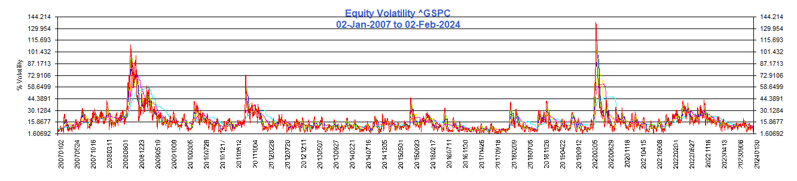

A market risk factor is an attribute of a financial instrument that contributes to the valuation of that instrument. Pricing models use mathematical formulas to convert market risk factors into a price that can be used to buy or sell (trade) the instrument. An instrument with high liquidity will allow traders to put higher reliance on the underlying market risk factors.
The most liquid market risk factors are foreign exchange rates with a daily trading volume of $5 trillion per day. Other “spot” type of market risk factors, ie. Those with short days to settlement include treasury bonds, large cap equities, and futures with large trading volume
A spot price embeds expectations of future economic events and pricing models include market risk factors for these events. The price of a bond embeds expectations of future short term rates and each bond in the term structure becomes a market risk factor. In the case of interest rate swaps the term structure becomes complex with many instruments used including over-night interest, cash, futures, bonds and swap spreads. Liquidity is also important in term structures with the most liquid instruments used to build a discount curve. Similarly, liquidity in option pricing is reflected by tendency for sellers to charge more as an option moves away from at-the-money. The following graphs show risk factors for interest rate yields and volatility risk factors for a number of assets.
Yields
Yield curves are graphed for central governments of Canada, Europe, U.K. and the U.S.(10 years of history, for 1, 2, 3, 5, 7, 10, 20, 30 yr tenors). Yield curves and flattening and trending lower. Long term yields embed* future expectations of short term interest rates, suggesting that rates in the future will be low. With short term rates rising currently, a straight-line projection should indicate that long term yields will rise also. Since that is not happening, the counter-intuitive reasoning is possibly that current high rates will depress future economic growth.
Volatility is increasing in the S&P500 index, ^GSPC.
 Click below to view curves
Click below to view curves
| CAD Yields | EUR Yields | GBP Yields | USD Yields |
*Bootstrapping of interest rates is a method used to price fixed rate and floating rate instruments consistently. In this methodology the discounted sum of bond coupon payments equals the discounted sum of the expected short tem interest rates. In fixed income analytics, a discount factor, d(t) = (1 - r(t)*sum of the discount facters up to t)/(1+r(t)). From this the expected short term rate can be derived as d(t-1)/d(t)-1.
Volatility
Volatility is the risk factor that distinguishes the pricing of options from pricing of their underlying assets. The graphs above plot historical standard deviations for various time periods for the S&P Index (^GSPC), a cryptocurrency, bitcoin(BTC), gasoline futures (RB) and foreign exchange spot (GBPUSD). Unlike many risk factors where highest risk was observed during the financial crisis of 2008, energy volatility is a function not only of economic/political factors, but of weather. At the end of August, wholesale gasoline jumped nearly 14% due to tropical storm Harvey. The pound sterling experienced high volatility following the Brexit vote in June 2016.
 Click below to view curves| Equity ^GSPC Vols | Futures BTC Vols | Futures RB Vols | FX GBPUSD Vols |